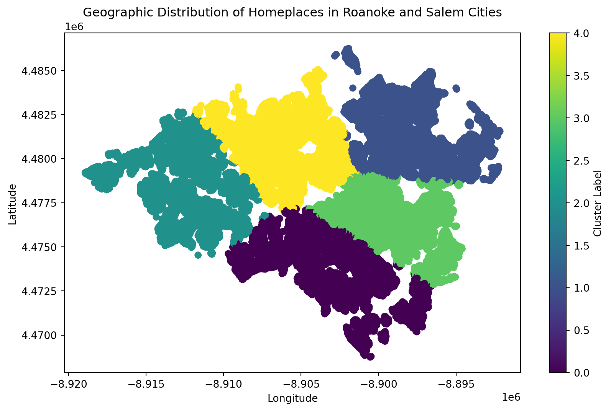

Geographic clustering, a powerful analytical tool to uncover the urban patterns of human settlement within Roanoke and Salem cities
news
code
analysis
Author
Heba Nusair
Published
November 6, 2023
In the bustling urban landscapes and the serene outskirts of Roanoke and Salem cities, every homeplace tells a story. Geographic clustering, a powerful analytical tool, allows us to uncover these stories by revealing the invisible patterns of human settlement and organization within these spaces. This analysis goes beyond mere numbers and dots on a map; it provides us with the insight to understand how populations distribute themselves across regions and how this distribution may affect and be affected by socio-economic factors.
A Tapestry of Settlement:Over 55,000 points represent workers’ homeplaces scattered across the Roanoke and Salem cities, Painting a vivid picture of the urban landscape. Each point is a nexus of life and activity, contributing to the rich pattern of local habitation.
In this exploration, we dive into the spatial heart of Roanoke and Salem, employing a data-driven approach to demystify the geographic distribution and density of home locations. By utilizing the K-Means clustering technique, we aim to transcend the traditional narratives of urban planning and offer a unique lens through which we can comprehend the dynamics of these cities.
Join me on this cartographic journey as we navigate through the coordinates, interpret the clusters, and stitch together the fabric of these communities, one cluster at a time.
Data Description:
This dataset, retrieved from the web-based mapping tool OnTheMap, reveals the intricate interplay between workers’ employment locations and their residences. Carefully processed through Geographic Information Systems (GIS), the data presents a detailed residential fabric of 55,494 workers’ homeplaces in Roanoke and Salem cities. Each data point is a precise coordinate, marking the longitude (X) and latitude (Y) of individual dwellings. Together, they form an urban mosaic that not only maps out dense habitational clusters but also embodies the vibrant core of these communities, inviting us to explore the complex narrative of local settlement patterns.
Methodology:
Choosing the Right Tool: We employed K-Means clustering, a method perfect for drawing virtual boundaries around homes that are close together. It’s like sketching out neighborhoods based on where people live.
Data Standardization: Before clustering, we standardized the home coordinates. This ensures that every home, regardless of its actual geographical position, is treated equally in our analysis.
Focused Analysis: We consciously left out job types from our study. Why? To focus solely on where people live. This allowed us to paint a clear picture of the residential layouts in Roanoke and Salem, unclouded by other factors.
Code
import pandas as pdfrom sklearn.cluster import KMeansfrom sklearn.preprocessing import StandardScalerimport matplotlib.pyplot as plt# Load the datadf = pd.read_csv('Homeplaces in Roanoke and Salem Cities.csv')# Select only the geographic coordinatesdf_geo = df[['X', 'Y']]# Standardizing the features (important for K-Means)scaler = StandardScaler()df_geo_scaled = scaler.fit_transform(df_geo)# KMeans clusteringkmeans = KMeans(n_clusters=5, n_init=10)clusters = kmeans.fit_predict(df_geo_scaled)# Adding cluster labels to dataframedf['Cluster'] = clusters# Plotting the clustersplt.figure(figsize=(10, 6))plt.scatter(df['X'], df['Y'], c=df['Cluster'], cmap='viridis', marker='o')plt.title('Geographic Distribution of Homeplaces in Roanoke and Salem Cities')plt.xlabel('Longitude')plt.ylabel('Latitude')plt.colorbar(label='Cluster Label')plt.show()

What we get is a straightforward, unfiltered view of how communities in these cities are shaped – a true representation of the area’s residential dynamics.
Dissecting Roanoke and Salem’s Residential Layout
In the visual analysis that unfolded, we used a scatter plot to translate the K-Means clustering algorithm’s output into a vibrant map. The algorithm diligently partitioned the area into five distinct clusters, each represented by a unique color—ranging from deep purple to bright yellow. The resulting plot is a testament to the power of data-driven geographical analysis.
Upon examining the plot, the clusters emerge as distinct groupings that correspond to different areas within Roanoke and Salem. Some clusters are tightly packed, indicating neighborhoods with high home density, while others are more spread out, suggesting less populated or more spacious living areas. The color coding not only adds visual appeal but also signifies the cluster each home belongs to, with the color bar on the right serving as a handy reference.
A closer look at the distribution of these clusters may reveal insights into the urban planning and development patterns of the cities. For example, we might observe that certain colors (clusters) concentrate around city centers or major transport routes, suggesting a correlation between home location and accessibility. On the other hand, some clusters could be outlining the suburban and peri-urban spread, hinting at the expansion of the cities’ residential zones.
These observations provide a starting point for urban analysts, policymakers, and planners to dive deeper into the factors driving such settlement patterns, potentially influencing future development and infrastructure planning to better accommodate the needs of Roanoke and Salem’s growing population.
Discussion: Interpreting the Living Fabric of Roanoke and Salem
Real-World Correspondence: The clusters delineate the urban (dense, central areas), suburban (less dense, outskirts), and rural (sparse, peripheral areas) zones, painting a picture of residential density and urban spread.
Influencing Factors:
Amenities: Areas with more facilities, like schools and malls, could attract larger populations, leading to denser clusters.
Transport Infrastructure: Homes near major roads or public transit lines often form noticeable clusters, suggesting a preference for connectivity.
Economic Dynamics: Housing affordability and job availability are likely to influence where people choose to live, affecting the cluster distribution.
Overlap Insights:
Transition Zones: Overlapping clusters may signal transitional areas where different urban zones meet and meld.
Growth Patterns: These overlaps could also highlight regions undergoing development, indicating a blend of old and new neighborhoods.
Planning Implications: Recognizing these patterns is crucial for urban development strategies, aiming to balance growth with the preservation of the cities’ unique identities.
Conclusion: Unveiling the Geospatial Heartbeat of Roanoke and Salem
Key Findings: Our analysis revealed distinct clusters that reflect the nuanced interplay between Roanoke and Salem’s urban, suburban, and rural landscapes. The clustering patterns highlighted not just where people live, but also how they are likely to interact with their environment based on proximity to amenities and infrastructure.
Significance of Geographic Clustering: The power of geographic clustering lies in its ability to transform raw data into a narrative about population distribution and urban dynamics. It offers a bird’s-eye view of the area’s residential heartbeat, providing insights into the patterns of human settlement.
Implications for Urban Development: This clustering analysis is more than an academic exercise; it’s a tool for change. Urban planners and policymakers can harness this knowledge to make informed decisions about where to develop next, how to allocate resources efficiently, and how to plan future infrastructure. For instance, denser clusters might need more public transit, parks, or schools, while sparser ones could be targeted for sustainable development to prevent urban sprawl.
Broader Applications: Beyond urban planning, this analysis could inform emergency services on where to focus preparedness efforts, help businesses decide where to open new locations, and guide environmental assessments to ensure green spaces are preserved and expanded.
In essence, by shedding light on how our cities pulse with life, geographic clustering empowers us to craft communities that are not only vibrant and prosperous but also equitable and sustainable.